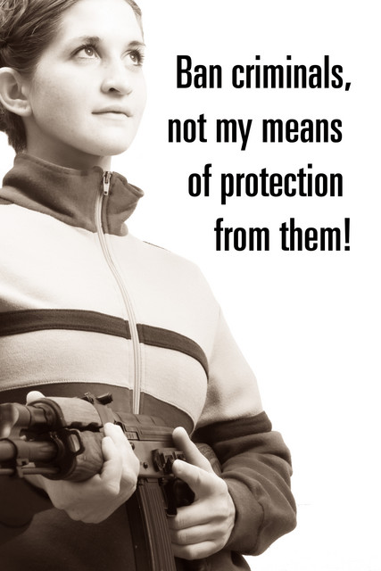
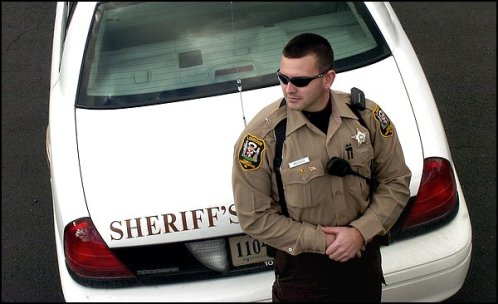

Another Blog
Website and automated forms processes, Copyright
2000-2007, The M. A. LeFande Company.
All
rights reserved. No claim to original government forms
Terror groups call democracy un-Islamic
The radical Ansar al-Sunnah Army and two other terrorist groups issued a statement yesterday, warning Iraqis not to vote in the Jan. 30 election because democracy is un-Islamic.
"Democracy is a Greek word meaning the rule of the people, which means that the people do what they see fit," the groups said in a warning. "This concept is considered apostasy and defies the belief in one God — Muslims' doctrine."
After the warning was issued, all 700 employees of the electoral commission in Mosul, Iraq, resigned, the Arab satellite channel Al Jazeera reported.
Farid Ayar, spokesman of the Independent Electoral Commission of Iraq, said he was not able to confirm the Al Jazeera report.
"We have been trying to contact our people in Mosul to see if the report is accurate, but we have not been able to reach them," Mr. Ayar told the Associated Press.
Ansar al-Sunnah earlier posted a manifesto on its Web site saying democracy amounts to idolizing human beings. Yesterday's joint statement reiterated the threat that "anyone who accepts to take part in this dirty farce will not be safe."
A message this week from Osama bin Laden, the terrorist mastermind and a spiritual leader for millions of Muslims, branded anyone who votes in Iraq as an "infidel."
http://www.washingtontimes.com/world/20041230-111254-6665r.htm
posted by Matthew 10:08 AM
matt@lefande.com
D.C. Appeals Court Criticizes Street Closing During Protest
An appellate court yesterday overturned the conviction of a man arrested for crossing a police line during a war protest last year, finding that the government failed to explain the need to close a stretch of Pennsylvania Avenue near the White House.
The D.C. Court of Appeals ruled that in prosecuting the demonstrator, the government presented only "hearsay and speculative testimony" to support closing the 1600 block of Pennsylvania Avenue, outside Lafayette Square, where protesters were massing.
The appellate case focused on a March 19, 2003, protest across from the White House. About 30 people were arrested across the District that day in a string of protests touched off by the impending start of the war in Iraq. Most of the arrests were in and around Lafayette Square, which is across from the White House.
Andrew Bloch was among those arrested. Like almost all of the others arrested there, he was charged with crossing a police line, which the U.S. Park Police said it had set up at the request of the Secret Service to create a "staging area" for security operations.
Bloch was convicted in a bench trial before D.C. Superior Court Judge Stephen G. Milliken. A professional poker player who went to law school, Bloch appealed the conviction and represented himself earlier this month against the D.C. attorney general in arguments before a three-judge appellate panel.
Appellate Judges Stephen H. Glickman, Theodore R. Newman and Frank E. Schwelb did not say that the street's closing could not be justified. They said it was the role of the Secret Service, the Park Police and other law enforcement agencies to decide when and where such closures take place.
But the stretch of Pennsylvania Avenue in front of the White House is a public space, the judges said. The government was required to justify the resulting restriction on the First Amendment, and had failed to do so, they said.
http://www.washingtonpost.com/wp-dyn/articles/A37904-2004Dec30.html
posted by Matthew 10:04 AM
matt@lefande.com
An important decision for the right to carry arms
On Dec. 17, the U.S. Department of Justice's Office of Legal Counsel announced its conclusion that the Second Amendment "secures an individual's right to keep and bear arms."
This is huge.
For generations, gun control advocates have made many misleading statements, and many lives have needlessly been lost in reliance on the wrong-headed philosophy that individuals should not have guns.
Those buying into the gun control movement have very sadly come to experience the realities of being unarmed and defenseless — the District of Columbia and the United Kingdom most recently. They are rethinking their position of banning guns, with renewed debates and bills introduced to permit private ownership of firearms once again. The D.C. bill's sponsors realized that an unarmed citizenry is at the mercy of criminals. The U.K., also experiencing a horrific rise in violent crime since banning guns, is revisiting being gun-free. Similar gun-free countries — Australia, South Africa, the Philippines — are experiencing a tragic rise in crime.
But what about vigilantism and chaos? In those states where right to carry concealed weapons is law, this has not been the case after decades of experience with both veteran and new permitees.
This year, President Bush signed the Law Enforcement Officers Safety Act of 2003, which in 2004 became Public Law 108-277, putting not more cops on the street, but, in licensing retired officers, the law in effect put more armed private citizens on the street. The president also signed into law Dec. 17 the Intelligence Reform and Terrorism Prevention Act, a move that is not unconnected to the nationwide movement to organize defenses.
The FBI and other authorities show that though about 47,000 persons a year are shot or killed by guns, more than two million crimes per year are thwarted by the legal and proper use of a gun, often without firing a shot. The number of acts not permitted to escalate tells the story.
Washington state now recognizes concealed carry permits from other states. With one more state added to the list, many citizens can legally carry concealed weapons in nearly two-thirds of the states of the Union, but where right to carry is needed most — in California, for instance — it is frustrated the most. At present, a gun ban for San Francisco is proposed.
Nationwide concealed carry is a necessary action worth completing, and with many bills pending for just that, constituents are urged to contact their representatives to see them through. A few examples are HR 990 for nationwide concealed carry, and, of course, D.C."s bill. Variations on these nationwide concealed carry bills are in the works.
All of these actions are part of an intelligent movement to recognize the true authority of the people as an immense and dependable resource not only in time of threat to the nation, but also for local, individual self-defense in time of violent crime and other instances where first responders are not immediately available.
The significance of the DOJ announcement is stunning. For the first time in a long time, it represents the beginning of a shift in the professional relationship between the government and the governed. Even though law-enforcement officers are divided and not monolithically against citizen concealed carry here, one of the distressing notions handed down as training is exemplified in the December 1999 issue of the FBI's Law Enforcement Bulletin. That article emphasizes that officers should notice political stickers on a stopped vehicle, where NRA stickers and the like should warn the officers of a "violence potential" of the motorist.
The DOJ announcement represents a possible turnaround of this attitude (which should next be handed down as training as well) and proper recognition of the individual not as an interference with law enforcement, but of being the first line of defense for individual and for community.
The Office of Legal Counsel's conclusion recognizes the realities of being disarmed, and recognizes necessarily the American people as a resource willing to participate in their own governance and defense. Informed and heard — the individual citizen as the first line of defense is the ultimate homeland security.
http://www.presstelegram.com/Stories/0,1413,204~21479~2618488,00.html
The full report can be found at the DOJ's Website,
http://www.usdoj.gov/olc/secondamendment2.htm
posted by Matthew 12:50 PM
matt@lefande.com
DWI Suspect Killed By Alleged Drunken Driver
A man who was suspected of drunken driving is dead after an ironic crash.
Authorities in Burlington County, N.J., said an officer pulled over the 34-year-old man early Friday. But while he was being given the roadside sobriety test, a tractor-trailer crashed into the police car, which then hit the man's vehicle.
The officer was able to get out of the way but couldn't move the suspect, who died instantly.
The truck driver has been charged with drunken driving and several motor vehicle offenses.
http://www.local6.com/news/4008909/detail.html
posted by Matthew 12:48 PM
matt@lefande.com
Lead-foot drivers are gold for Oregon town
In the past few years, this stretch of I-5 became the most lucrative speed trap on the interstate's 308-mile pass through Oregon. Coburg nabbed enough drivers to finance nearly half its $1.7 million budget. The architect of the operation, Police Chief Mike Hudson, earned $124,232 in 2003 -- more than the superintendent of the Oregon State Police will make this year.
But today, the empire built on those tickets is in shambles. Hudson is an ex-chief. The City Council is planning layoffs in the face of a $500,000 budget deficit. And the town awaits a racketeering lawsuit from two former employees who say Coburg's speed trap had little to do with public safety and everything to do with generating cash to fuel Hudson's expanding department.
The rise and fall of the operation, which Hudson steadfastly defends as a valid public safety effort, is a tale of small-town ingenuity grounded partly in Oregon's grim fiscal reality. An unprecedented dip in state police patrols on Interstate 5 created an incentive for a few cash-strapped law enforcement agencies to fill the gaps.
Hudson's officers stopped thousands more I-5 drivers last year than the much larger Eugene, Springfield and Lane County departments combined, writing $1.4 million in tickets. State police and sheriff's departments up and down I-5 say there is no speed trap anywhere else on Oregon's busiest interstate highway as notorious as Coburg's.
Yet Hudson's success backfired. Complaints from drivers and other police agencies caused a backlash from the Legislature -- dubbed the "Coburg law" -- that pinched the I-5 cash gusher to a trickle this year. Amid city budget troubles this month, Hudson and his top lieutenant resigned, with the chief drawing a $120,000 severance.
It was then that plaintiffs in the forthcoming racketeering suit -- former police Lt. Patrick D. Smith and former city recorder Peggy de Montmorency -- stepped forward to allege that Hudson had created a traffic-ticket mill, complete with citation quotas, then forced them out because they refused to play along.
Observers of the controversy, including state police Superintendent Ronald C. Ruecker, say the situation in Coburg has jeopardized the credibility of traffic enforcement across Oregon.
"I think the public should not have to worry," Ruecker said, "whether motivation for the issuance of the citation is about revenue or about safety."
http://www.oregonlive.com/holidays/oregonian/index.ssf?/base/news/1103374702206521.xml
posted by Matthew 11:04 PM
matt@lefande.com
The Coalition to Prevent Assault Weapon Violence needs you!
The coalition was organized in the wake of the expiration of the 1994 Assault Weapon Ban that expired on September 13, 2004. It started when one of our founding members read a release by the Brady Campaign to Prevent Gun Violence that AK47s and Uzis were coming to our neighborhood this summer.
We investigated and determined that all scientific research to date shows that these weapons are rarely used in crimes. We trust that John Kerry, the Brady Campaign, and independent experts like Tim Robbins would never mislead us, so we set out to prove what the experts cannot - that assault weapons do cause crime.
To that end, we obtained the above "Colt AR-15" assault rifle from a local death merchant and configured a web-cam and lighting to monitor it 24 hours a day.
Much to our embarassment, some astute volunteers pointed out that we needed to "load" the rifle with assault ammunition. A few days later, thanks to some generous paypal donations from our volunteers, we have the rifle loaded with a "magazine" and we again wait for spontaneous acts of violence.
Due to our limited budget and staffing, we are not available to monitor these assault weapons around the clock. We depend on you, our supporters, to help us maintain our vigil with the assistance of our webcam.
Helping is easy - you simply need to load this page regularly. Bookmark it. Make it your browser's default page. Check it every night after you tuck your children in. It's their lives your assistance might save.
You could be the one that spots the violence caused by assault weapons.
http://www.assaultweaponwatch.com/
posted by Matthew 4:31 PM
matt@lefande.com
Officer Guilty of Assault in D.C. Stop
A D.C. police officer was convicted yesterday of assaulting a Maryland man who objected to being questioned and searched because his car was stopped in an area frequented by prostitutes.
Officer Joseph S. Fagan, 33, was found guilty by a D.C. Superior Court judge of a misdemeanor charge of simple assault involving unnecessary and wanton use of force. He faces a jail term of up to 180 days when he is sentenced Feb. 1. He is suspended without pay and could lose his job.
Prosecutors said that during an early-morning encounter Sept. 24, 2000, Fagan, assigned to the 1st District, overreacted and used his metal baton to strike Edward Torres twice in the head after Torres tried to brush off Fagan's hold.
Torres, 31, testified that he demanded to know why he was being "harassed." He testified that he was indignant, but he denied trying to attack Fagan during the confrontation in the 900 block of 11th Street NW. Prosecutors did not press any charges against him.
Fagan, who joined the D.C. police department in 1994, was indicted in February, more than three years after the incident.
Fagan and his defense attorneys, Mark E. Schamel and David Schertler, argued that Torres threatened to "deck" the officer and appeared to be grabbing for the officer's gun.
"All I could think of was he going for my gun," Fagan testified Thursday, toward the close of the three-day trial before Judge Harold L. Cushenberry Jr.
But Fagan's partner, Audra Smith, testified that Torres was not a threat.
Smith's testimony was a crucial component in the case, which was prosecuted by Marian L. Borum, an assistant U.S. attorney, and Marcy Jackson, an attorney in the Justice Department's civil rights division.
It is unusual for an officer to testify against another in a case involving allegations of brutality, but Smith agreed to cooperate with investigators. Her account largely corresponded with the version of events offered by Torres. She is now a sergeant.
On the witness stand, Torres acknowledged accusing the officers of harassment and later cursing and refusing to hand over his driver's license. He said he did not think that they were justified in directing him to move or in ordering him out of the car when he objected.
http://www.washingtonpost.com/wp-dyn/articles/A8815-2004Dec17.html
posted by Matthew 8:58 AM
matt@lefande.com
Federal Laws Increasingly Used Against Local Crimes
A federal judge yesterday sentenced an Alexandria man to life in prison for the shooting death of a Treasury Department employee, one in a growing number of cases in which prosecutors are using tougher federal laws to target traditionally local crimes.
U.S. District Judge Leonie M. Brinkema imposed the sentence on Joseph E. Williams for last year's execution-style slaying of Gail Collins, 48, his neighbor. No gun was ever found and there were no witnesses, making it difficult to prosecute Williams on state murder charges.
But because Williams, 46, had three convictions for armed robbery, he fell under a federal statute that made him an "armed career criminal." A federal jury convicted him on two firearms counts and made a special finding that Williams used a gun to kill Collins during a robbery.
Federal laws are being increasingly used nationwide in a variety of cases once left to local authorities. Much of the trend is being driven by Project Safe Neighborhoods, a Bush administration initiative that subjects criminals who use guns to tougher federal sentencing laws and helps local authorities fight gun crime. It is partly modeled on Project Exile, a Virginia program begun in 1997 to crack down on gun violence in Richmond.
Since 2000, federal gun-crime prosecutions have risen 76 percent, Department of Justice figures show. The Eastern District of Virginia, which includes Alexandria, Richmond and about half the state, has the largest number of firearm defendants in the country.
But the heightened federal role can be seen in more than just gun cases. This week, a federal grand jury in Alexandria indicted two members of the violent Mara Salvatrucha street gang on charges stemming from the slaying of a Herndon teenager, part of an increasing use of racketeering laws to combat gangs.
Collins's body was found in her Alexandria apartment on March 21, 2003. She had been shot once in the head about 10 days earlier. Her body was lying on the floor in a position that indicated she had been kneeling at the side of her bed, court documents said.
Prosecutors argued at the trial that Williams had extorted the personal identification number of Collins's ATM card from her at gunpoint before pulling the trigger. She and Williams were neighbors, and she relied on him to do occasional errands around her apartment, prosecutors said.
The investigation showed that Williams had Collins's bank card March 12 and that the card was used to withdraw $580 from her account. Prosecutors said Williams, whom they called a notorious crack addict, used the money to buy crack.
A federal jury in September convicted Williams on two counts: being a felon in possession of a firearm and possessing a firearm while being an unlawful drug user. Even though no gun was found, a bullet was recovered from Collins's body, and witnesses said they had seen Williams with a 9mm pistol, the same type of gun that killed her.
http://www.washingtonpost.com/wp-dyn/articles/A8807-2004Dec17.html
posted by Matthew 8:53 AM
matt@lefande.com
Armed Citizen of the Week
The operator of a Cleveland, Ohio grocery store shot and killed a suspected robber three nights after a gunman killed a clerk and customer at another deli in the city.
Police said a man walked into a grocery Thursday evening with a gun, demanded money and threatened the five people inside. Nadim Shalamy, 71, of Lakewood, shot the robber in the head, police said.
The robber had fired at least one shot, witnesses said.
The Cuyahoga County coroner's office said early Friday that no identification of the victim was available.
"He shot a shot, and he missed, and my father didn't miss," said Jeff Shalamy. "If my father didn't shoot him, he would've killed all of them."
Police arrested two men who were waiting in a suspected getaway car. Their names weren't immediately released.
Police Lt. Linda Kaspar said investigators would look at whether the two arrested men were among three suspects wanted in the killings Monday night of deli clerk Jorge Santiago, 36, and customer Rebecca Cordoves, 21, who was buying formula for her newborn.
Police do not believe the third man will be a suspect in any future robberies.
http://www.mansfieldnewsjournal.com/news/updates/10506.html
posted by Matthew 8:30 PM
matt@lefande.com
Grand jury probes link between Sadaam and Clinton-pardoned financier
A federal grand-jury investigation of pardoned financier Marc Rich's role in the U.N. oil-for-food scandal has focused on whether he helped Iraqi dictator Saddam Hussein reward the families of Palestinian bombers who carried out suicide attacks in Israel, sources said yesterday.
Law-enforcement authorities and congressional investigators said the grand jury wants to know whether cash funneled to Saddam by oil traders — including Mr. Rich — to help arrange multimillion-dollar Iraqi oil deals for political leaders and well-heeled investors was used by the now-deposed dictator to pay the bombers' families.
"Can we legitimately speculate that some of the blood money Saddam paid to kill people in Israel may have originated or at least been touched by Marc Rich through the United Nations' dreadful oil-for-food program?" said a source close to the probe. "We know Saddam Hussein was getting a rake off from the U.N. program and Rich was in the middle of that."
The grand-jury probe centers on questions of whether Mr. Rich, pardoned by President Clinton on his last day in office in a pending $48 million income-tax-evasion case, brokered millions of dollars in deals between Saddam and other traders as part of the oil-for-food scandal, the sources said.
It has focused on concerns that Mr. Rich and others made illegal payments to Iraq to obtain lucrative oil contracts in deals that were intended to circumvent U.N. sanctions against the Iraqi government and whether any of that money was used to pay the families, they said.
Last month, the House International Relations Committee cited documents confirming that Saddam diverted money from the oil-for-food program to pay millions of dollars to families of Palestinian suicide bombers who carried out the Israeli attacks.
The committee said Saddam maintained secret bank accounts in Jordan to reward the families, tapping into bribes from foreign companies and brokers involved in the oil-for-food program, which was established in 1996 to allow Iraq to trade oil for food, medicine and other humanitarian items.
But the committee said Saddam, now in U.S. custody, pocketed $21.3 billion in illegal revenue under the program, adding that Palestinians said he paid more than $35 million to families of Palestinians killed or wounded in the Israel bombings.
Since September 2000, Palestinians have carried out 117 suicide bombings, killing 494 Israelis and others.
The committee said money from illegal oil-for-food deals went to accounts held by the Jordanian branch of the Iraqi government-owned Rafidain Bank and that a former Iraqi ambassador to Jordan, Sabah Yassen, withdrew cash to make payments ranging from $15,000 to $25,000 to the families of Palestinian bombers.
Mr. Rich fled to Switzerland and renounced his U.S. citizenship after a 1983 indictment on 65 counts of racketeering, fraud, tax evasion and illegal oil trading in a case involving the evasion of $48 million in taxes and the violation of U.S. sanctions by trading with Iran while American hostages were held in that country.
At the time of his pardon, Mr. Rich was sixth on the Justice Department's outstanding fugitives list. Prosecutors had refused for 17 years to negotiate a settlement in the case.
In a 2001 report, the House Government Reform Committee, which investigated the last-minute Clinton pardons of Mr. Rich and a business partner, Pincus Green, said the two men had long-standing ties to Saddam, which were well known to U.S. intelligence officials. The report said the two men had done "extensive trade" with Iraq, Iran, Cuba "and other rogue states that have sponsored terrorist acts."
http://www.washingtontimes.com/national/20041216-115729-9671r.htm
posted by Matthew 7:57 AM
matt@lefande.com
Use of thermal imaging camera helps convict drunken driver
Jason Matthew Henderson hadn’t learned not to drive drunk after two previous DUI convictions, but he did learn to have a story ready by the time the authorities arrived on the scene.
Unfortunately for him, his alibi was foiled by a quick-thinking fire chief and the unconventional use of a technology becoming more readily available to local firefighters: a thermal imaging camera.
Henderson, 29, of West Chester, Pa., had been traveling along Telegraph Road in West Caln after 11 p.m. on Dec. 23, 2003, when he lost control of his Dodge Neon and slammed it into a tree. Minutes later, Daniel Ray Metzler, chief of Martin’s Corner Fire Company, arrived on the scene.
The driver told Metzler he, in fact, was not the driver. His buddy had been behind the wheel, Henderson claimed, and after the wreck the other man took off into the woods.
Metzler retrieved his department’s thermal imaging camera -- a device that creates an image by detecting temperature, rather than light like a traditional camera.
In the camera’s viewfinder, objects warmer than the surrounding environment, like a human body, appear bright white. Extremely hot objects -- like flames -- glow red and orange.
Thermal imaging cameras will detect any type of heat, including residual heat left by an object no longer there.
Jay Whitmer, fire chief of East Brandywine Fire Company, recently demonstrated this capability at the Fire Stop in Downingtown -- the store he owns that sells assorted firefighter equipment, including thermal imaging cameras.
Whitmer placed the palm of his hand on a tabletop for several seconds, removed it, then aimed the camera at the table’s surface. The screen showed a white outline of his palm and fingers. Enough heat lingered to maintain the image for several minutes.
After listening to Henderson’s story, Metzler scanned the woods lining Telegraph Road to no avail. Then he pointed the device at Henderson’s car.
"We had to do our job and find the other person, or at least try," Metzler said. Aiming the camera at the Neon’s seats "was just our next option."
The device showed the fire chief just one of the seats was warm, the driver’s seat. No one else had been in the car when it crashed, the chief concluded, just Henderson.
"I wasn’t out to prove that he wasn’t the driver," Metzler said, "just that our job was done, that there was nobody else and we could go home."
A thermal imaging camera is a big-ticket item, especially for the county’s smaller fire departments, but it is steadily becoming standard equipment at many firehouses. Whitmer noted his store recently sold 35 to the Philadelphia Fire Department at about $9,000 apiece.
The Martin’s Corner Fire Company has owned a thermal imaging for three years, Metzler said. Its current model cost $12,000, paid for in part by a grant from the federal government and part using cash from a fund-raiser.
"It’s like seeing in the dark," Metzler said. "They are very expensive, but it’s well worth the money."
About half of the departments countywide own the device, said John Major, a salesman for Fire Stop and fire chief in Royersford, Montgomery County. Many of the local departments without thermal imaging cameras jointly applied recently for a federal grant that would help pay for the devices
"It’s the last piece of the puzzle," Major said. "As a chief, it gets my guys out of a bad environment quicker."
Fire companies equipped with the cameras primarily bought them to locate people trapped inside burning buildings, but it also has become common practice for firefighters to use the devices to search wooded areas, either for accident victims ejected form their vehicles or individuals hiding out from authorities, like Henderson’s phantom driver.
To anyone’s recollection -- including the local firefighters interviewed, Assistant District Attorney Lorraine M.B. Finnegan, who prosecuted Henderson and Henderson’s attorney, James D. Famiglio -- no one has ever used the camera to convict a drunken driver.
Finnegan has heard the "other driver" defense often from DUI defendants.
"You can’t deny being there because you’re there," the attorney said, "but you can say someone else left."
Rarely does the story work, even without evidence from a thermal imaging camera.
Prior to Henderson’s jury trial, which concluded with a guilty verdict on Nov. 30, Common Pleas Judge James P. MacElree II conducted a brief demonstration of Martin’s Corner’s camera in his courtroom.
The judge first instructed one of his sheriff’s deputies to get up from his chair and had Metzler aim the camera where the man had been sitting. The judge observed a white outline of the officer’s body in the seat. He repeated the experiment on several different locations throughout the room -- both in place where people had and had not been seated recently.
MacElree eventually concluded Metzler’s testimony about what he saw when he pointed the camera at the seats in Henderson’s car would be admissible during the trial, despite objections from Famiglio.
The attorney wanted a Frye hearing, which would have called thermal imaging experts to testify and scrutinize the reliability of the camera when used to detect residual heat left in the seats of a car.
"The standard is pretty clear. They have to prove that its used and the methodology is accepted," Famiglio said. "It might be, but they didn’t do any of it."
When told about the trial, another local attorney, Samuel C. Stretton, theorized a "million different things could explain the result" obtained by the camera.
"It’s the DA’s burden to prove that’s scientifically acceptable," Stretton said. "That seems to be highly questionable."
In addition to Metzler, Finnegan also called the woman who arrived on the scene of the accident before the firefighter and the man Henderson claimed had been driving.
Asked if he though the testimony about the camera may have been the final push towards a conviction, Famiglio responded, "I think that might be the case."
Henderson was sentenced on Dec. 1 to six to 23 months in prison. MacElree agreed to allow the man to move into a rehabilitation center after 90 days.
Henderson does not report to jail until next month. Famiglio said he is working on an appeal in the meantime.
http://www.dailylocal.com/site/news.cfm?newsid=13567431&BRD=1671&PAG=461&dept_id=17782&rfi=6
posted by Matthew 9:04 AM
matt@lefande.com
Militant recruiters out in open in Tehran
The 300 men filling out forms in the offices of an Iranian aid group were offered three choices: Train for suicide attacks against U.S. troops in Iraq, for suicide attacks against Israelis or to assassinate British author Salman Rushdie.
It looked at first glance like a gathering on the fringes of a society divided between moderates, who want better relations with the world, and hard-line Muslim militants hostile toward the United States and Israel.
But the presence of two key figures — a prominent Iranian lawmaker and a member of the country's elite Revolutionary Guards — lent the meeting more legitimacy and was a clear indication of at least tacit support from some within Iran's government.
Since that inaugural June meeting in a room decorated with photos of Israeli soldiers' funerals, the registration forms for volunteer suicide commandos have appeared on Tehran's streets and university campuses, and there is no sign that Iran's government is trying to stop the shadowy movement.
On Nov. 12, the day that Iranians traditionally hold pro-Palestinian protests, a spokesman for the Headquarters for Commemorating Martyrs of the Global Islamic Movement said the movement signed up at least 4,000 new volunteers.
Spokesman Mohammad Ali Samadi told the Associated Press that the group had no ties to the government.
And Iranian Foreign Ministry spokesman Hamid Reza Asefi told reporters recently that the group's campaign to sign up volunteers for suicide attacks had "nothing to do with the ruling Islamic establishment."
"That some people do such a thing is the result of their sentiments. It has nothing to do with the government and the system," Mr. Asefi said.
Despite the government's disavowal of the group and some of its programs, there are indications that the suicide attack campaign has some legitimacy within the government.
The first meeting was held in the offices of the Martyrs Foundation, a semiofficial organization that helps the families of those killed in the 1980-88 Iran-Iraq war or those killed fighting for the government on other fronts. It drew hard-line lawmaker Mahdi Kouchakzadeh and Gen. Hossein Salami of the elite Revolutionary Guards.
"This group spreads valuable ideas," Mr. Kouchakzadeh said.
Mr. Samadi said that 30,000 volunteers have signed up and that 20,000 of them have been chosen for training. Volunteers already had carried out suicide operations against military targets inside Israel, he said.
But he said discussing attacks against U.S. troops in Iraq "will cause problems for the country's foreign policy. It will have grave consequences for our country and our group. It's confidential."
As devoted Muslims, members of his group were simply fulfilling their religious obligations as laid out by Ayatollah Khomeini, he said.
In his widely published book of religious directives, the ayatollah said, "If an enemy invades Muslim countries and borders, it's an obligation for all Muslims to defend through any possible means: sacrificing life and properties."
Mr. Samadi said: "With this religious verdict, we don't need anybody's permission to fight an enemy that has occupied Muslim lands."
http://www.washingtontimes.com/world/20041215-115559-8086r.htm
posted by Matthew 7:43 AM
matt@lefande.com
After you ban all the guns, what next?
The United Kingdom's Knives Destroy Lives campaign is calling for a five-year minimum jail term for carrying a blade longer than three inches.
It wants a six-month minimum jail term for carrying a blade shorter than three inches, or three months in the case of juveniles.
The petition, backed by the parents of Luke Walmsley and Damilola Taylor, was handed to 10 Downing Street on Monday.
Paul Walmsley, whose 14-year-old son was killed at school, said those caught with knives should "serve some form of term in youth custody or in a prison".
The families are backed by the Victims of Crime Trust, which says a child dies in a knife attack every two weeks.
It says there are three times as many fatal stabbings as gun deaths and penalties for carrying a knife should be the same as for carrying a gun.
Home Secretary David Blunkett is meeting police on Wednesday to discuss ways of tackling knife crime.
He is considering raising the minimum age for buying a knife to 18.
http://news.bbc.co.uk/1/hi/uk/4090897.stm

posted by Matthew 8:43 AM
matt@lefande.com
Fla. Police Enlisting Civilians To Slow Speeders
A Florida Panhandle police chief is looking for residents to volunteer to drive marked police cars -- to slow down speeding drivers.
Gulf Breeze police chief Peter Paulding said the volunteers will drive along U-S 98 during morning and afternoon rush hours to act as pace cars for lead-footed drivers.
The volunteers won't carry guns, issue traffic citations or confront violators. The volunteers will need a good driving record and will be trained how to use the police radio in case they spot trouble.
Paulding got the idea from a task force created this year to fight the increasing numbers of traffic accidents in Gulf Breeze, outside of Pensacola.
http://www.local6.com/news/3994907/detail.html
posted by Matthew 8:27 AM
matt@lefande.com
Computer system cost city millions
The District has lost between $4 million and $6 million on a mobile computer system for the fire department, the cost of which has swelled as much as sixfold during a year and a half of missed deadlines for implementing it.
D.C. Fire Chief Adrian H. Thompson halted work on the troubled project on Friday after reviewing a progress report about it, department spokesman Alan Etter said yesterday.
The computer project included a global-positioning system to track and dispatch ambulances more effectively while providing them with real-time directions for emergency calls.
It also was designed to convey information from hazardous-materials and medical calls over a private, encrypted network to emergency-room staff, administrators and city agencies and to deliver triage options to first responders.
"It's kind of hard to point to one thing that's been holding this up," said Devin Griffin, head of information technology at the fire department. "It seems like every other time [there's a problem with the system] it's a different issue."
The cost of the project grew from $1 million in October 2002 to between $4 million and $6 million as the software and the modems for the wireless network were found to be incompatible with the fire department's existing computer-assisted dispatch system, fire officials said.
Mr. Griffin, who has overseen the project for the fire department for about a year, said the project's computer hardware already was "behind the curve in technology" when the contract was awarded in 2002.
He said he was not certain what the total cost has been because all contractual issues have been handled by the city's Office of the Chief Technology Officer. OCTO initiated the project and has been involved in a management capacity and holds the funding for the project, Mr. Griffin said.
But Linda Argo, chief of staff for Chief Technology Officer Suzanne Peck, said that the fire department took full control of the project in March and that fire officials should have all the budget numbers.
"We have had nothing to do with that project since March," Miss Argo said. "We have not been involved at all and can't speak to any of the current issues."
In March, the project had been under way for 17 months and already was one year behind schedule, officials said.
The project's original $1 million contract was awarded in October 2002 to Silver Spring-based Optimus Corp. to implement the computer system with the information-technology company's software for fire and emergency-medical-services departments. The project was expected to be completed in spring 2003.
Mr. Griffin said the project was not dead but has been put on hold while several major problems are worked out.
http://www.washingtontimes.com/metro/20041214-122057-4906r.htm
posted by Matthew 7:32 AM
matt@lefande.com
Judge throws out 11 DWI cases
A judge this week threw out 11 DWI cases brought by a state trooper who has been found by the courts to have used ethnic profiling.
After Highway Patrol Trooper Clinton J. Carroll did not appear in Durham District Court on Tuesday, Judge James Hill threw out the cases, some of which were nearly three years old. A Highway Patrol spokesman said Carroll was in surgery that day, but did not receive a subpoena to attend court.
Lawyers representing the 11 defendants were prepared to put on cases to prove that Carroll stopped them because they were Hispanic, said David Wicker of Durham, who represented two of the defendants.
"The U.S. Supreme Court says you can't make a stop without reasonable, articulable suspicion that there is some criminal activity ongoing," Wicker said. "In America you have a right not to be arrested unless there is the commission of some crime."
In September 2002, Durham Senior Resident Superior Court Judge Orlando Hudson found that Carroll had violated the constitutional rights of Rodriguez Juan Villeda when he pulled Villeda over.
At a hearing where Hudson made his decision, three Durham lawyers testified that Carroll said he stops Mexican men on the weekends because he believed they were likely to be drunk. Villeda's lawyer at the time said Carroll targeted a nightclub on Hillsborough Road that was popular with Latinos.
The Highway Patrol suspended Carroll with pay for 40 days and investigated the case. It determined that he did not engage in ethnic profiling and returned him to duty. Carroll has been assigned to Alamance County for about a year now, said Sgt. Everett Clendenin, a Highway Patrol spokesman.
In July, the state Court of Appeals upheld Hudson's ruling.
Carroll has few, if any, pending cases remaining in Durham, Clendenin said.
"Trooper Carroll was never issued a subpoena for these 11 cases. He had no notice that these cases were up for trial," Clendenin said. "That's a concern for the Highway Patrol because we could have made arrangements for him to be there."
http://www.newsobserver.com/news/story/1920421p-8268344c.html
posted by Matthew 8:27 AM
matt@lefande.com
Dress code wearing thin on air marshals
A Thanksgiving Day morale booster for federal air marshals has instead turned into possible pink slips for air cops who ignore their strict dress code.
Thomas Quinn, director of the Federal Air Marshal Service (FAMS), paid a surprise visit to Ronald Reagan Washington National Airport on Thanksgiving to thank the law-enforcement officials for their holiday work. He reportedly was angered when nearly 30 marshals deplaned and only one was dressed satisfactorily.
One air marshal who asked not to be identified called it "ridiculous" that marshals are expected to blend in with holiday travelers by wearing a suit.
"On Thanksgiving Day, travelers don't wear business suits to visit family and friends," the marshal said.
The dress-code policy is a sore point among the traveling marshals, who say it compromises their undercover status.
A provision included in the intelligence-reform bill would allow the air marshals to wear less-conspicuous clothing. The final vote on the bill is expected today in the Senate.
Pulling air cops from flight duty because of attire puts a strain on an agency already stretched for manpower, say marshals, who cover less than 2 percent of an estimated 30,000 daily flights. Suspending one marshal means the suspension of an entire team, which can affect two to four flights per day, the second marshal said.
"Of all times to do this, during the holidays, this is insane," the second marshal said.
Marshals say they need to protect their undercover status so terrorists cannot determine which flights are protected.
One memo from the Miami FAMS field office says: "Effective immediately, rotating [supervisors] will be assigned to and will be present in each of our airports every day.
"I am particularly concerned about the general appearance of some FAMs and that will be one of the factors I expect supervisors to observe and report ... A professional appearance means well-groomed and wearing neat and clean clothing — not rumpled, wrinkled, mismatched, etc."
A memo issued from the Boston field office says that "failure to meet the standards will result in administrative action.
"Compliance with these policies is mandatory, not optional."
Marshals say the strict code does not take climate into consideration. In the Miami heat, marshals are required to keep their suit coats on at all times, yet in Pittsburgh, agents are forbidden from wearing overcoats in cold weather.
"You wear a sports coat, or you wear a suit coat, or you look for another job," agents were told Monday.
"They're making a huge deal of this. They've blown a gasket," the first marshal said.
Two marshals were yanked from a flight in July for not wearing suits or sports coats and a third marshal faces three days of suspension in January for not wearing a jacket before two flights in July.
http://www.washingtontimes.com/national/20041208-122555-6114r.htm
posted by Matthew 9:50 AM
matt@lefande.com
$242,000 Award Ordered by Jury In Police Killing
A federal jury has ordered the D.C. government to pay about $242,000 to the family of a man who was killed in March 2002 by an off-duty D.C. police officer.
The jury found that Officer Marcus Gaines was negligent in the steps leading to the shooting of Brian Hundley, 41, in a Northwest Washington parking lot. But it rejected the family's bid for more damages, finding that Gaines did not abuse Hundley, violate his civil rights or inflict emotional distress upon him when he killed him with a single gunshot to the chest.
Hundley was unarmed when he was shot in the 600 block of N Street NW. His family filed suit in U.S. District Court two weeks after the shooting. This was the second time the case went to trial; the first trial ended with a hung jury.
According to evidence presented at the retrial, Gaines was walking from the parking lot to his apartment with his brother about 1:30 a.m. March 23, 2002, when he came upon a car with Hundley and a woman inside. The car backed up quickly into Gaines's path, and Gaines yelled for the driver to be careful because "you almost hit a law enforcement officer."
The car started to move toward him, Gaines testified, and he pulled his service pistol and ordered Hundley to get out of the car.
What happened next was the crux of the trial. Gaines said Hundley got out of the car and put his hands on the side of the vehicle, as ordered. But then, according to Gaines, Hundley jerkily put one hand behind his back and lunged at him. Hundley family attorneys said Gaines fabricated that threatening move to justify the shooting.
In their verdict, jurors did not accept Gaines's account of Hundley's behavior. The decision Monday followed an eight-day trial and four days of deliberations.
The jury awarded Hundley's estate $50,000 for the pain and suffering he experienced and $25,000 for some wages he would have made if he had lived. The jury also ordered the D.C. government to pay $56,400 to Hundley's wife, Lynne Hundley, from whom he was estranged at the time, and $111,000 to his son Edmund, now 7.
Although the verdict was a victory on paper, Hundley's relatives and lawyers called the amount of the award a bitter insult to Hundley's life and said they will appeal.
"It really defies logic," said Carl Hundley, who brought the wrongful death suit on behalf of his late brother. "They found the [traffic] stop was negligent, they found my brother didn't threaten the officer. One is left to wonder if they are just deciding his life had no value."
The family's attorney, Gregory L. Lattimer, called the award a "travesty. . . . A 41-year-old man dies at the police's hands without threatening him or doing anything wrong, and his life is worth $241,000. How are the police allowed to get away with this?"
Gaines is assigned to the 3rd Police District. A spokeswoman for the D.C. attorney general's office, which defended the department, said that the jury erred in siding with the family and that the city might seek to overturn the award.
"Although the attorney general's office believes the court's finding of negligence is contrary to law, the District does fully understand the jury's desire to compensate the Hundley family for their tragic loss," said spokeswoman Traci Hughes.
http://www.washingtonpost.com/wp-dyn/articles/A45571-2004Dec7.html
posted by Matthew 9:40 AM
matt@lefande.com
In Loudoun, Brown Is the New Tan

After four decades in tan trousers and brown shirts, the Loudoun Sheriff's Office announced last week that it is turning its internal fashion world upside down. Deputies will now sport brown trousers and tan shirts.
The force is thrilled, Sheriff Stephen O. Simpson said -- especially with the new cotton-blend cargo pants. They are sturdier, airier and more flame-retardant than the retired polyester dress pants. They are cheaper. They have leg pockets to stick notebooks in. And their military style is the height of cop fashion. In fact, there is only one problem with the new uniforms: They might be illegal.
According to a 1960s-era state law, deputies must wear brown shirts or blouses, taupe trousers, a Smokey the Bear-type hat and other complementary accessories. White shirts are allowed in warmer months. Badges are left to the sheriff's discretion.
Turns out several sheriff's departments have long been bucking the brown -- and the law. Some departments spice up their looks with shades of green. Others wear navy blue pants. Still others are bolder: In the spring, Albemarle County is planning to unveil a new black-and-gray look.
Word was in sheriffs' circles that the law was antiquated and unenforceable. But in an official opinion issued in October, Attorney General Jerry W. Kilgore (R) made no bones about the sanctity of Virginia's wardrobe regulation. The law was intended to standardize uniforms across the commonwealth, and it is "plain and unambiguous," the opinion said.
The stifling taupe dress pants that Loudoun sheriff's deputies have worn for four decades were fine for sitting in a patrol car but no good for dashing through briars, crawling under cars or contending with fire.
"They're polyester basically," Simpson said. "A flare hits them, and it burns the legs off of them."
Simpson figured the switch fell under the law's exception, which allows for variation if the standard uniform "would adversely limit the effectiveness of the sheriff's or deputy sheriff's ability to perform his prescribed duties." The taupe trousers are so delicate and easily soiled that they simply are not sensible, he said. Outfitting all 393 deputies in the new uniforms also saves the county $17,685 -- about 10 percent of the budget for the previous uniforms.
Simpson said he believes the uniform law was aimed at the rag-tag deputies of earlier times who would "wear their bluejeans and flannel shirts and pin their badge on." Loudoun's variation was hardly so egregious, he said.
"At least I'm sticking with brown and tan," he said. "I'm just reversing the colors to make it more practical."
In Loudoun, Brown Is the New Tan (washingtonpost.comhttp://www.washingtonpost.com/wp-dyn/articles/A45061-2004Dec7.html
posted by Matthew 8:42 AM
matt@lefande.com
City of San Diego, California, et al. v. John Roe
The city of San Diego (City), a petitioner here, terminated a police officer, respondent, for selling videotapes he made and for related activity. The tapes showed the respondent engaging in sexually explicit acts. Respondent brought suit alleging, among other things, that the termination violated his First and Fourteenth Amendment rights to freedom of speech. The United States District Court for the Southern District of California granted summary judgment to the City. The Court of Appeals for the Ninth Circuit reversed.
The speech in question was detrimental to the mission and functions of the employer. There is no basis for finding that it was of concern to the community as the Court’s cases have understood that term in the context of restrictions by governmental entities on the speech of their employees.
The judgment of the Court of Appeals is Reversed.
http://www.supremecourtus.gov/opinions/04pdf/03-1669.pdf
posted by Matthew 7:58 PM
matt@lefande.com
Burrito boy tenders tainted taco intending to dip CHiP
A 16-year-old boy working at a fast food outlet in Santa Maria, Calif was arrested for allegedly poisoning burritos ordered by a California Highway Patrol officer.
After purchasing his meal, the CHP officer took several bites from a burrito, felt a burning sensation and noticed a strange odor, police said Monday.
He alerted the restaurant manager and Police Department and the teenager was arrested Friday, more than three weeks after the Nov. 10 incident.
The Santa Maria High School student, whose name was not released because of his age, was booked for investigation of felony assault with a deadly weapon on a peace officer, investigators said. The CHP officer, whose name was withheld, wasn't hurt.
The teenager intentionally placed a small amount of a cleaning compound in the officer's burritos, thinking it would make him sick, police said. The youth told detectives he was mad at police because he had a bad experience with an officer that same day.
http://www.montereyherald.com/mld/montereyherald/news/politics/10359239.htm
posted by Matthew 1:17 PM
matt@lefande.com
11 Arrested After Being Directed to Wrong Courtroom
Eleven people directed to the wrong courtroom in the Seminole, FL County Courthouse were arrested and jailed when they didn't appear before the proper judge, who was in an adjoining courtroom less than 100 feet away.
The six men and five women spent eight hours Friday in a Seminole County Jail cell before everything was straightened out.
"I'm hungry, I'm tired and I'm disgusted," said Frantarshia Coleman, after she was released from jail. "This is ridiculous. This is disgusting."
Coleman, 33, of Orlando was in court on a ticket for not having her registration and proof of insurance. She had a wrinkled, yellow traffic ticket indicating her hearing was in Courtroom 1B. She and the others were supposed to be in 1A.
When they didn't show up in 1A, Seminole County Judge John R. Sloop signed warrants for their arrests.
By the time the 11 finally discovered that they had been misdirected by court personnel and asked to appear before the judge to explain what had happened, he would not see them and ordered their arrests.
Later in the day, Sloop signed paperwork allowing them to be released without having to pay bail. It is unclear why Sloop reversed his decision.
About the time that Sloop was reversing himself, Circuit Judge James Perry, chief judge of the 18th Judicial Circuit, took similar action to make sure the 11 would be released.
"When I was made aware of this, I tried to reach Judge Sloop," Perry said. "When I was unable to reach him, I took steps to make sure they were released on their own recognizance."
Perry would not discuss Sloop's handling of the case or whether he planned to speak about it to Sloop. When asked, Perry said he would not have handled the issue the same way as Sloop.
http://www.local6.com/news/3972021/detail.html
posted by Matthew 2:55 PM
matt@lefande.com
London Met chief backs attacking burglars
Householders should be allowed to use extreme force to protect themselves against intruders even if it results in the death of a burglar, senior police chief Sir John Stevens has been quoted as saying.
London Metropolitan Police Commissioner Stevens, due to step down in January, told Saturday's Daily Telegraph the law should presume that the person had acted lawfully.
"Of course you don't want to have gratuitous or excessive violence ... but you have to be given the power to use what is necessary," the outgoing commissioner said in an interview.
People who defended their families or property should face prosecution for injuries inflicted only in "extreme circumstances", he added.
"My own view is that people should be allowed to use what force is necessary and that they should be allowed to do so without any prosecution."
"I'm not talking about guns but people being allowed to defend themselves and use whatever is necessary to defend themselves against someone who may well be armed with a knife."
Stevens said the existing law allowing people to use "reasonable force" to resist intruders, seemed to be weighted against householders, leaving them confused about their rights.
His remarks came after Wednesday's arrest of a man in connection with the murder of high-profile financier John Monckton, a killing that stunned London's business community.
Monckton, the 49-year-old head of bond dealing at Legal & General Investment Management, was stabbed at his plush Chelsea home on Monday. He died later in hospital.
Monckton's wife Homeyra, 45, was also attacked and is recovering in serious condition after emergency surgery.
The question of a person's right to defend themselves was also raised in 1999 when reclusive farmer Tony Martin shot and killed a 16-year-old burglar.
Martin served two-thirds of a five-year sentence for manslaughter but received wide support for his action.
http://uk.news.yahoo.com/041204/325/f7w63.html
posted by Matthew 2:40 PM
matt@lefande.com
French Police Misplace Explosives on Jet
Police at Paris' top airport lost track of a passenger's bag in which plastic explosives were placed to train bomb-sniffing dogs, police said Saturday. Warned that the bag may have gotten on any of nearly 90 flights from Charles de Gaulle, authorities searched planes upon arrival in Los Angeles and New York.
French police said the explosives were harmless and there was no chance of their going off, since no detonators were connected to them.
More than 300 passengers were evacuated and their luggage searched when their Air France flight from Charles de Gaulle arrived in Los Angeles late Friday the U.S. Transportation Security Administration said
Two Air France and one American Airlines flight to Paris were also searched in New York City, TSA spokesman Norm Brewer said. No explosives were found on any of the flights.
French police at Charles de Gaulle deliberately placed up to five ounces of plastic explosives into a passenger's luggage Friday evening, police spokesman Pierre Bouquin said.
But a ``momentary lack of surveillance'' led to the bag being lost on a conveyor belt carrying luggage from check-in to planes, he said.
Authorities immediately alerted the relevant airlines that one of between 80 and 90 planes that left the French capital from 5:30 p.m. to 7 p.m. Friday could be carrying the explosives, Bouquin said.
Four of the flights were en route to the United States, while others were headed to places like Japan and Brazil, Bouquin said. Some were domestic French flights. The flight searched in Los Angeles was delayed two to three hours before continuing on its next leg to Tahiti in the South Pacific.
``These dogs must be trained in the most realistic situation possible ... to be the most effective,'' Bouquin said.
``Indeed, it's possible that someone will have a surprise when he opens his bag.''
http://cnn.netscape.cnn.com/news/story.jsp?floc=FF-APO-1103&idq=/ff/story/0001/20041204/2317591323.htm&sc=1103
posted by Matthew 2:04 PM
matt@lefande.com
Companies Fight Law Allowing Guns at Work
If you and your co-workers could bring guns to work and keep them nearby, would that make you safer?
That is the idea behind an Oklahoma law that went into effect Nov. 1, requiring employers to allow their workers to bring guns to work and leave them in their locked cars in the parking lot.
Three companies — Whirlpool, The Williams Cos. and ConocoPhillips — filed suit in U.S. District Court in Tulsa, claiming the law is unconstitutional because it violates their property rights. Whirlpool has since dropped out of the suit.
According to the Oct. 29 filing by Williams' and ConocoPhillips' attorneys, the new law violates the companies' rights under the U.S. and Oklahoma constitutions because it "effectively takes or damages their real property and/or property rights without due process of law."
The law is written as a series of amendments to the Oklahoma Firearms Act and the Oklahoma Self-Defense Act, and says in part that "no person, property owner, tenant, employer or business entity shall be permitted to establish any policy or rule that has the effect of prohibiting any person, except a convicted felon, from transporting and storing firearms in a locked vehicle on any property set aside for any vehicle."
But one of the co-authors of the bill, state Sen. Frank Shurden, a Democrat, said that what was at issue was the safety of the workers, especially those who travel to or from work at off hours.
Violence in the workplace is an issue that has periodically gained national attention, with mass killings that draw intense media coverage. But those crimes are relatively uncommon, and according to an FBI report issued in the spring of this year, workplace violence is not.
A Justice Department study cited in the FBI report put the number of "violent victimizations" suffered in the workplace at more than 1.7 million per year, with the cost to businesses running "into many billions of dollars."
Of the roughly 900 workplace killings each year, nearly 80 percent are committed by people who have no connection with the business, usually during the course of a robbery, according to the government report. The rest are roughly evenly divided between those committed by those for who a company provides service, by an employee or former employee against co-workers, or by someone who has a personal relationship with an employee.
http://abcnews.go.com/Business/News/story?id=276460&page=1
posted by Matthew 8:02 AM
matt@lefande.com
What's cost of a life saved?
The Wilmington Police Department has begun using a new safety tool that could save lives but has also prompted the police union to seek additional pay.
The department used a grant to purchase five defibrillators that have been installed in police cruisers, Police Chief Robert Spencer said. All of the department's officers have completed training to become certified to use the devices, he said.
Police Sgt. Joe Desmond, vice president of the International Brotherhood of Police Officers Local 318, said police look forward to having the devices.
He said studies show defibrillators are especially useful to police officers after 9 p.m., when police are out on the streets and likely to respond first to medical emergencies.
But the union also believes that taking on the extra responsibility of administering medical care is worth extra compensation.
"The union's position is, we welcome it," Desmond said. "We think it's a great tool, and we feel we should be granted extra compensation for the use of defibrillators."
The union has been impact-bargaining with management to amend language in its collective bargaining agreement regarding use of defibrillators. They have not been successful in getting more money, Desmond said, adding that police did not want to delay implementation of the defibrillators because of stalled negotiations.
Defibrillators in police cruisers have paid off in other communities.
Tewksbury purchased 11 defibrillators for its cruisers two years ago, and they have saved several lives, said Tewksbury Police Chief Alfred Donovan. In June, Tewksbury Sgt. Robert Westaway used his defibrillator to save a man who went into cardiac arrest during a pickup softball game.
The police union in Tewksbury had also sought additional compensation for the duty of using defibrillators. Their request was also denied.
"It's part of the job. It's a life-saving thing," Donovan said. "It's a matter of public need and public service."
http://www.lowellsun.com/Stories/0,1413,105~4761~2569652,00.html
posted by Matthew 6:18 PM
matt@lefande.com